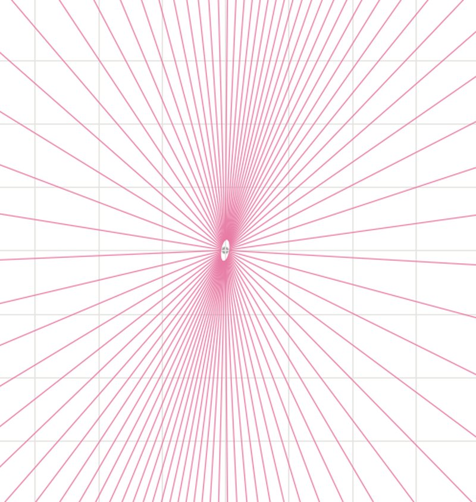
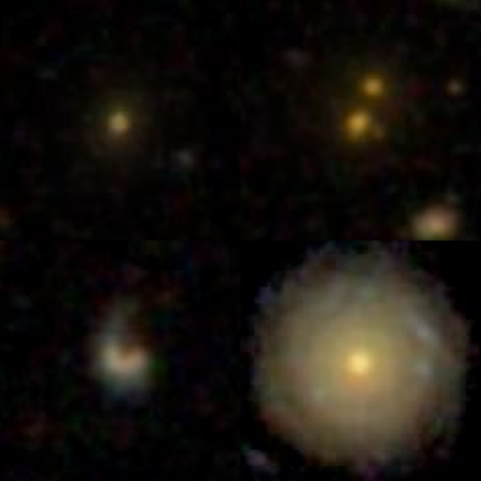

What does the simulation need?
Each of these three projects starts from a simple model and adds physics only when that model fails in a specific way you can point to. Each one ends by asking which of those ingredients the answer really depends on.
A ledger
Every ingredient is listed next to the failure that forced it in, with the figure that shows it.
A removal test
Take ingredients back out one at a time and see which results break, and which were decoration.
A figure per step
Each step names one signature figure, designed to be read without the text.
Projects

Solar system formation
The project runs from a collapsing gas cloud through a protostar, a disk, pebbles and planetesimals to terrestrial planets. It uses our own N-body, SPH and disk codes, adding fragmentation and general relativity at the end. Thirteen ingredients so far, and one open problem: no run puts enough mass inside 1.5 AU.

Defects from cosmological phase transitions
Domain walls, vortices and strings on one lattice engine. Four knobs are turned one at a time: the symmetry, the cooling rate, the dynamics afterwards and an expanding background. The result is a defect atlas.

Sky-object classifier
A CNN that learns stars, galaxies and artifacts from a forward model of the SDSS telescope, then gets tested on real images. Each ingredient of the simulation is credited with the accuracy it buys.